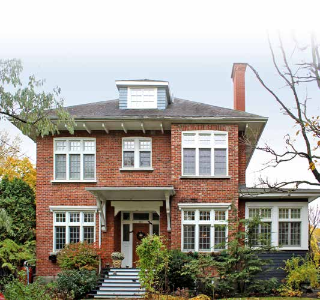
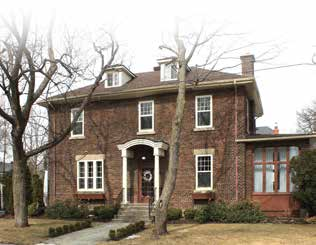

Cubic (Four Square) house La maison cubique

© Ville de Saint-Lambert / Patri-Arch (G. Mongrain, M. Dubois), Répertoire des courants architecturaux, fiche 6

© Ville de Saint-Lambert / Patri-Arch (G. Mongrain, M. Dubois), Répertoire des courants architecturaux, fiche 6
The Four Square: a big brick cube under a pyramid roof, roomy enough for large families, cheap enough because its parts came by catalogue. Sober by nature; the porch woodwork, a brick pattern and the exposed rafter tails are its ornaments.
Where it comes from
Product of standardised materials and prefabricated components orderable by catalogue, hence "abordable et facile à construire", popular in village, town and country alike in the first decades of the 20th century.
| Tenure / plan | single-family |
|---|---|
| Storeys | 2 |
| Roof form | hipped-or-pyramidal |
| Roof pitch | – |
| Window proportion | vertical |
| Principal cladding | clay-brick |
| Roofing | see materials |
| Garage | none |
| Lot width | – |
| Front setback | – |
| Side setback | – |
| Front yard green | – |
What Répertoire des courants architecturaux says about this type
Siting & landscape
- Appeared in the United States at the end of the 19th century and took hold in Québec in the first decades of the 20th; numerous in Saint-Lambert; variants from wealthy families' residences to semi-detached pairs for the middle class.
Massing
- Square or rectangular body of two storeys, slightly raised; pyramidal four-slope (pavilion) or hipped roof; detached or semi-detached.
- Projections may be added: forebodies, oriels, entrance vestibules; wood gallery or porch under an awning; oriels, verandas and gables in their traditional material.
- Corps de logis de plan carré ou rectangulaire de deux étages, légèrement exhaussé du sol avec toit pyramidal à quatre versants (toiture en pavillon) ou à croupes. La maison peut être isolée ou jumelée.
- Une galerie ou un porche, protégés par un auvent, sont construits en bois. … Les oriels et les vérandas ainsi que les pignons doivent conserver leur matériau traditionnel.
Articulation
- Ornament rather sober: decorative woodwork on gallery or porch, brick patterns, exposed rafter ends (chevrons) at the base of the roof.
- Les ornements sont plutôt sobres. Des boiseries décoratives ornent la galerie ou le porche, des jeux de briques forment des motifs et des chevrons sont apparents à la base du toit.
Openings
- Wood doors with glazing, with or without transom.
- Wood casements or guillotine windows, with or without muntins, per the original.
- Hipped or shed (rampantes) dormers.
- Portes en bois avec vitrage, avec ou sans imposte.
- Fenêtres à battants en bois ou fenêtres à guillotine avec ou sans carreaux selon le modèle utilisé à l'origine.
- Lucarnes à croupe ou rampantes.
Materials
- Almost always brick.
- Roof: traditional sheet metal preferred; asphalt shingle acceptable if original.
- Pour les murs extérieurs en brique, aucun matériau d'imitation n'est acceptable … Pour le toit, la tôle traditionnelle (à baguettes, pincée ou à la canadienne) est à privilégier. Le bardeau d'asphalte est acceptable s'il s'agit du matériau d'origine.
Conservation guidance (fiche)
- No imitation brick; do not paint masonry; keep brick and mortar sound; industrial claddings proscribed; on the roof, plastic and other synthetics proscribed.
- Railings in painted wood or wrought iron of traditional make.
- Steel/PVC doors unsuitable unless perfect imitations; avoid sliding, crank, undivided, aluminium or PVC windows.
- Do not raise foundations or change pitches; side/rear reduced-volume additions only.
Same word elsewhere
- English-revival stone house (Hampstead)
- Postwar detached house (Hampstead)
- Garden City House (Town of Mount Royal)
- Faubourg House (Town of Mount Royal)
- Canadian House (Town of Mount Royal)
- New England House (Town of Mount Royal)
- Georgian House (Town of Mount Royal)
- English Manor House (Town of Mount Royal)
- Bungalow (Town of Mount Royal)
- Cottage (Town of Mount Royal)
- Split-Level (Town of Mount Royal)
- Prairie House (Town of Mount Royal)
- Semi-detached single-family house (Outremont (borough of Montréal))
- Detached single-family house (Outremont (borough of Montréal))
- Modern house on the flank (Outremont (borough of Montréal))
- Faubourg house (Le Plateau-Mont-Royal (borough of Montréal))
- Detached urban house (Le Plateau-Mont-Royal (borough of Montréal))
- Row urban house (Le Plateau-Mont-Royal (borough of Montréal))
- Traditional French and Québécois house (Saint-Lambert)
- Mansard-roofed house of Second Empire influence (Saint-Lambert)
- Queen Anne style house (Saint-Lambert)
- Boomtown house with false mansard (Saint-Lambert)
- Boomtown house with crown (parapet or cornice) (Saint-Lambert)
- House of Arts and Crafts influence (Saint-Lambert)
- The modern house (including the bungalow) (Saint-Lambert)
- Lower-town company house (Ross and Macdonald, 1918–1923) (Témiscaming)
- Upper-district company house (Somerville, 1925–1950) (Témiscaming)
- Picturesque villa and country house (Westmount)
- Greystone row house (Westmount)
- Mansard-roofed house of Second Empire influence (Westmount)
- Queen Anne house (Westmount)
- Richardsonian Romanesque house (Westmount)
- Semi-detached brick house (Westmount)
- Eclectic prestige house of the summit (Westmount)
- Tudor Revival house (Westmount)
- Arts and Crafts semi-detached house (Westmount)
- Interwar apartment house (Westmount)
Same form elsewhere
- –
Same period elsewhere
- Family A company houses (models A1–A8) (Arvida (borough of Jonquière, Saguenay))
- Family B company houses (models B1–B4) (Arvida (borough of Jonquière, Saguenay))
- Family C company houses (models C1–C6) (Arvida (borough of Jonquière, Saguenay))
- Family D company houses (models D1–D5) (Arvida (borough of Jonquière, Saguenay))
- Families E, G, H, J, K, L, N, Y and Z (Arvida (borough of Jonquière, Saguenay))
- English-revival stone house (Hampstead)
- Garden City House (Town of Mount Royal)
- Faubourg House (Town of Mount Royal)
- Faubourg Apartment Block (Town of Mount Royal)
- Canadian House (Town of Mount Royal)
- New England House (Town of Mount Royal)
- New England Apartment Block (Town of Mount Royal)
- Georgian House (Town of Mount Royal)
- English Manor House (Town of Mount Royal)
- Semi-detached single-family house (Outremont (borough of Montréal))
- Semi-detached duplex (Outremont (borough of Montréal))
- Detached single-family house (Outremont (borough of Montréal))
- Opulent detached residence (Outremont (borough of Montréal))
- Apartment building (conciergerie) (Outremont (borough of Montréal))
- Modern house on the flank (Outremont (borough of Montréal))
- Faubourg house (Le Plateau-Mont-Royal (borough of Montréal))
- Detached urban house (Le Plateau-Mont-Royal (borough of Montréal))
- Duplex without front setback (Le Plateau-Mont-Royal (borough of Montréal))
- Duplex with front setback (Le Plateau-Mont-Royal (borough of Montréal))
- Duplex with exterior stair (Le Plateau-Mont-Royal (borough of Montréal))
- Triplex with interior stair (Le Plateau-Mont-Royal (borough of Montréal))
- Triplex with exterior stair (Le Plateau-Mont-Royal (borough of Montréal))
- Multiplex (Le Plateau-Mont-Royal (borough of Montréal))
- Row urban house (Le Plateau-Mont-Royal (borough of Montréal))
- Apartment block without courtyard (Le Plateau-Mont-Royal (borough of Montréal))
- Apartment block with courtyard (Le Plateau-Mont-Royal (borough of Montréal))
- Small apartment building (Le Plateau-Mont-Royal (borough of Montréal))
- Lower-town company house (Ross and Macdonald, 1918–1923) (Témiscaming)
- Upper-district company house (Somerville, 1925–1950) (Témiscaming)
- Picturesque villa and country house (Westmount)
- Greystone row house (Westmount)
- Greystone triplex with exterior stair (Westmount)
- Mansard-roofed house of Second Empire influence (Westmount)
- Queen Anne house (Westmount)
- Richardsonian Romanesque house (Westmount)
- Semi-detached brick house (Westmount)
- Eclectic prestige house of the summit (Westmount)
- Tudor Revival house (Westmount)
- Arts and Crafts semi-detached house (Westmount)
- Interwar apartment house (Westmount)
Same style elsewhere
- Faubourg House (Town of Mount Royal)